The slide of the lecture is on the left, the same figure on the right, computed in the browser from the same data. The ▶ button moves the parameter step by step.
Systemic Risk: from One Bank to the System · Exposure: MES and SRISK · Contribution: CoVaR · Connectedness: Spillover Networks · Tail Networks: the Financial Risk Meter · Stress Testing and Climate Risk · Case Studies: Quantile Connectedness and Bank Fragility
Systemic Risk: from One Bank to the System
Three Banking Systems, 2010–2026
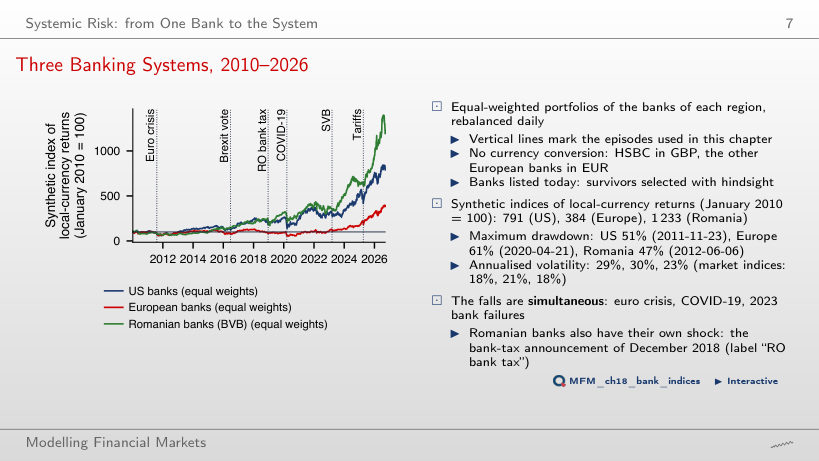
Answer
The European portfolio: 61%, with the trough on 2020-04-21. The US portfolio lost 51% up to 2011-11-23 and the Romanian one 47% up to 2012-06-06. The annualised volatility of the bank portfolios is 29%, 30% and 23%, against 18%, 21% and 18% for the S&P 500, Euro Stoxx 50 and BET.
Exposure: MES and SRISK
MES 5% of Thirteen Banks
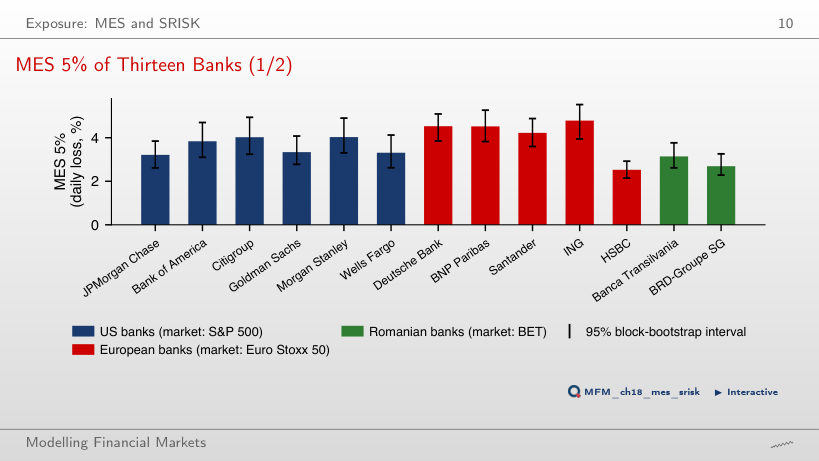
Answer
Yes. On those days the index loses 2.72% on average and the US banks between 3.21% (JPMorgan) and 4.03% (Morgan Stanley). In Europe, HSBC is the exception: 2.53%, against 3.16% for the Euro Stoxx 50.
SRISK as a Function of Leverage
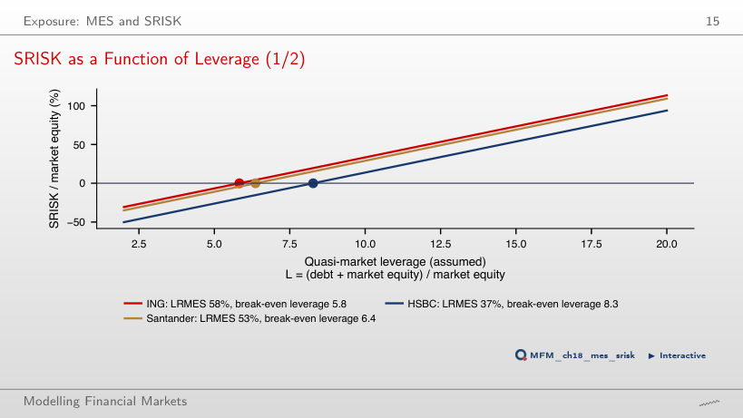
Answer
From Λ* = 5.8 with k = 8% and from 8.2 with k = 5.5%. For HSBC, the bank with the lowest LRMES (37%), the thresholds are 8.3 and 11.9. A lower prudential ratio raises the threshold of every bank.
Contribution: CoVaR
Quantile Regression: JPMorgan and the Other US Banks
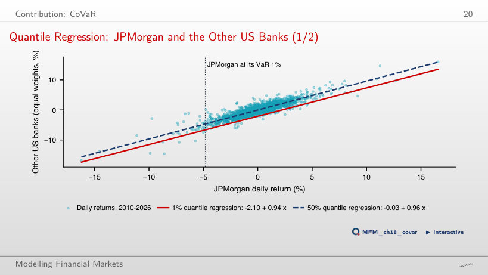
Answer
CoVaR 1% is 6.64% with JPMorgan at its VaR 1% (4.83%), against 2.03% with JPMorgan at its median. The difference, ΔCoVaR 1% = 4.62%, is the slope 0.94 times the distance between the two JPMorgan quantiles. 0.94 × 4.83 = 4.5% omits the intercept −2.10 of the 1% line; 5.07% is the unconditional system VaR 1%.
ΔCoVaR 1% of Eleven Banks
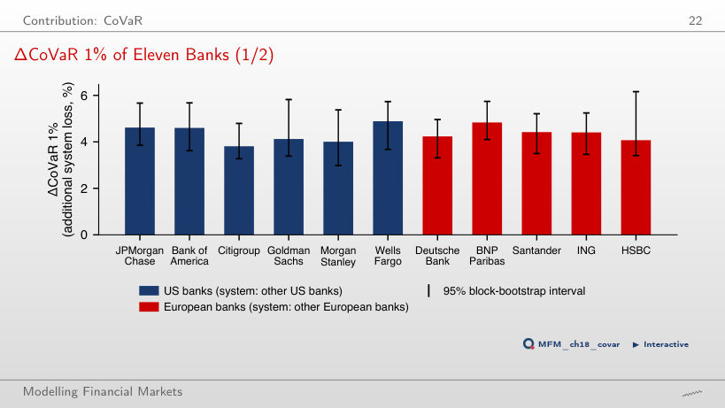
Answer
The estimates are 4.89% and 3.81%, but none of the 25 within-region pairs differs after the Holm correction. The overlap of the intervals [3.27, 4.79] and [3.68, 5.73] is not the test. The joint Wald test rejects equal contributions of the US banks (p = 0.011). At α = 5% the ranking changes: its Spearman correlation with the 1% ranking is 0.13.
VaR and ΔCoVaR Measure Different Things
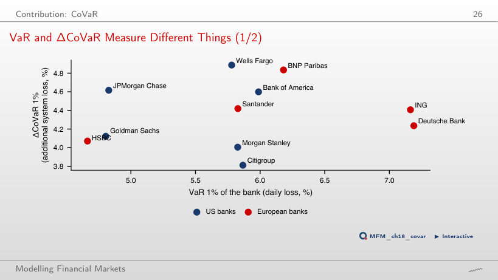
Answer
No. Deutsche Bank and ING have the largest VaR (7.19% and 7.16%) and only an average ΔCoVaR; JPMorgan has one of the smallest VaR (4.83%) and one of the largest ΔCoVaR. The Spearman correlation between VaR 1% and ΔCoVaR 1% is 0.13; at α = 5% it is −0.51.
Contribution versus Exposure
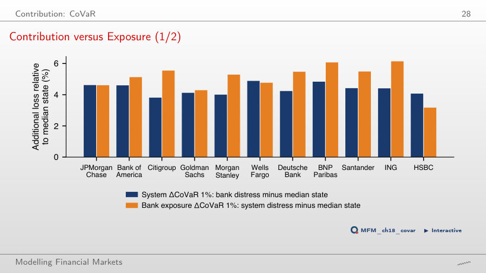
Answer
No. Its contribution is 4.41% and its exposure 6.14%. HSBC is the opposite case: contribution 4.07%, exposure 3.17%. Exposure exceeds contribution for four of the five European banks.
Connectedness: Spillover Networks
The Connectedness Table of Thirteen Banks
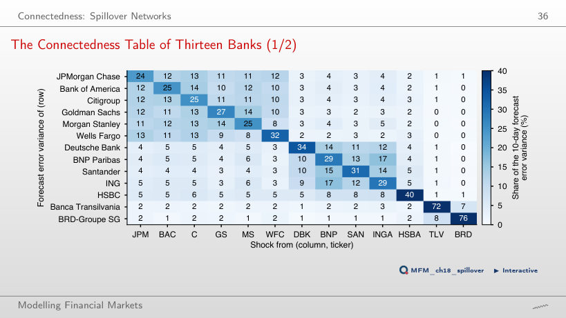
Answer
84.0% comes from US banks, own shocks included, and 15.0% from European banks. A European bank receives 72.7% from Europe and 26.2% from the US. Total connectedness, 63.9%, is the average over all banks of the share coming from the other banks, not a split by region.
The Net Spillover Network
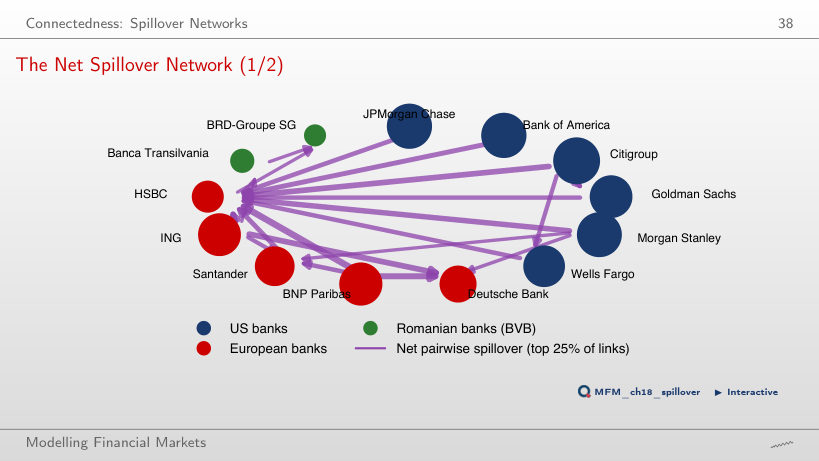
Answer
Transmitters: Citigroup (+19.0), Bank of America (+10.9), Morgan Stanley (+9.9) and JPMorgan (+9.8). Receivers: HSBC (−23.6), BRD (−13.0), Deutsche Bank (−12.6) and Banca Transilvania (−12.2). The arrows show the largest 25% of the pairwise net spillovers, those above 1.57 points.
Connectedness over Time
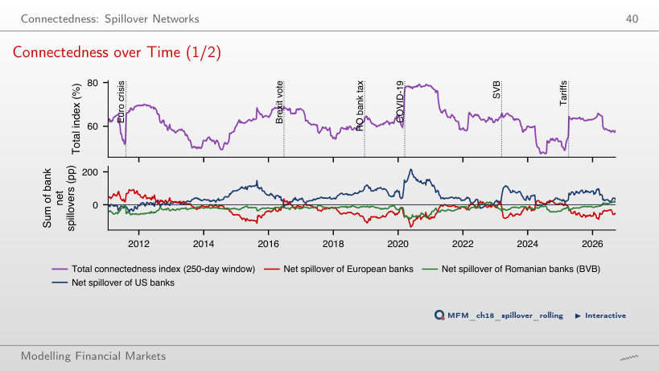
Answer
It rises from 61.8% on average in 2019 to 78.4% in spring 2020; the maximum is 79.3%, on 2020-08-27. It falls about 250 days later, partly because the crisis leaves the window; with a 100-day window the maximum is 85.6% on 2020-03-12, and the index first falls more than 10 points below it on 2020-08-13 (73.4%).
Tail Networks: the Financial Risk Meter
The Financial Risk Meter of Thirteen Banks
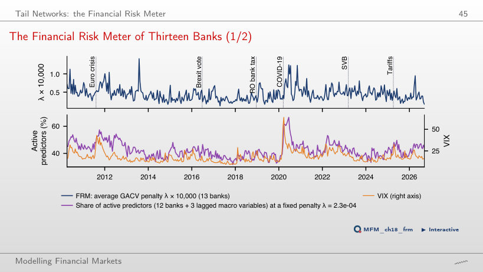
Answer
Weakly: the correlation over the 390 windows is 0.34. The share of active predictors at the fixed λ = 2.3 × 10⁻⁴ follows the VIX more closely (0.65); it ranges from 32% (2017-11-20) to 67% (2020-06-16), with a mean of 42%.
Stress Testing and Climate Risk
Seven Historical Stress Scenarios
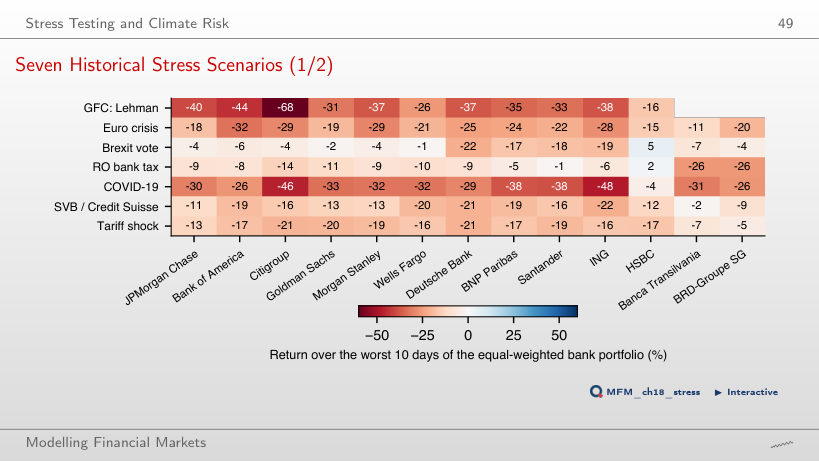
Answer
The Romanian banks: Banca Transilvania −26% and BRD −26% over the worst 10 days of the bank portfolio, while the US banks lost between 8% and 14%. For the bank portfolio the worst episode is still Lehman (a loss of 37.6%), followed by COVID-19 (31.9%).
Case Studies: Quantile Connectedness and Bank Fragility
Spillovers across Quantiles
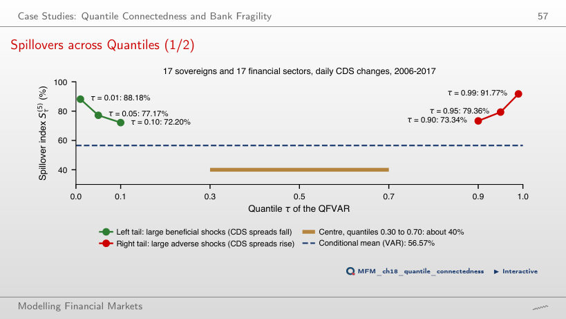
Answer
No. The index is 77.17% at τ = 0.05 and 79.36% at τ = 0.95, and 88.18% and 91.77% at τ = 0.01 and 0.99, while in the centre it is about 40%. Over the full sample the tails are almost symmetric: RTD = 2.19 points.
Treasuries and Bank Equity, 2022–2023
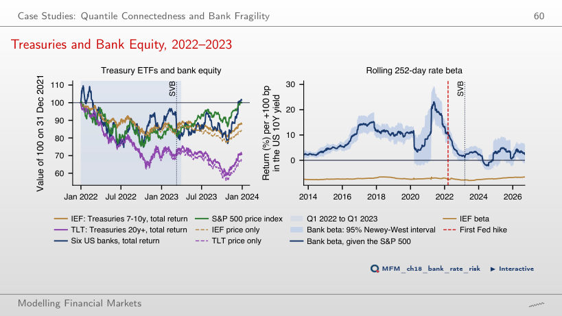
Answer
+12.8% at the end of 2021 and +1.08% on 10 March 2023, with the 95% interval [−0.40, 2.56], which contains zero. Over the same period IEF lost 7.8% per +100 bp. From 31 December 2021 to 31 March 2023, the IEF price fell by 13.8% and the TLT price by 28.2% (total returns: −11.8% and −26.2%).
Daily EODHD prices, January 2010 to 18 September 2026: six US banks, five European banks, two Romanian banks (BVB), the S&P 500, Euro Stoxx 50, BET and VIX indices. The historical scenarios for the international banks start in 2007. First case study: values reported by Ando, Greenwood-Nimmo and Shin (2022). Second case study: the IEF and TLT ETFs and the US 10-year Treasury yield (EODHD), from September 2012.